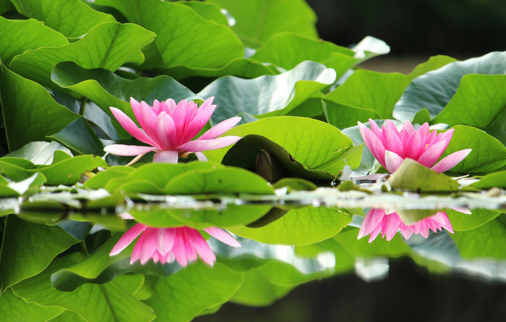
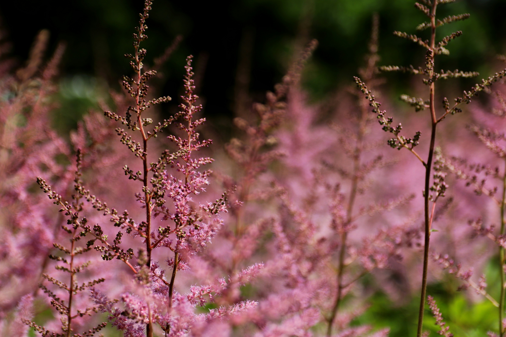
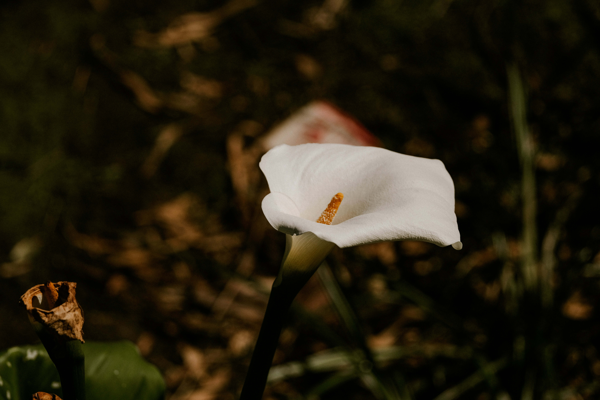

Las flores acuáticas son verdaderas maravillas de la naturaleza, adaptadas para prosperar en entornos sumamente desafiantes como lagos, estanques, ríos y humedales. Estas plantas han desarrollado características únicas que les permiten florecer en condiciones acuáticas, ofreciendo una impresionante gama de colores, formas y tamaños.
El lirio de agua es una flor acuática verdaderamente espectacular, que ha cautivado a la humanidad desde tiempos inmemoriales. Perteneciente a la familia de las nimfeáceas, estas plantas enraizadas en el fondo de lagos y estanques emergen grácilmente a la superficie, desplegando sus magníficas flores. Además de su atractivo estético, el lirio de agua desempeña un papel crucial en los ecosistemas acuáticos. Sus flores proporcionan néctar y polen a los insectos polinizadores, mientras que sus raíces ayudan a mantener la calidad del agua al absorber nutrientes y sedimentos.
La Astilbe japonica, también conocida como falsa espírea o simplemente astilbe, es una planta herbácea perenne originaria de Japón y otras regiones de Asia Oriental. Esta flor llamativa y elegante pertenece a la familia de las saxifragáceas y es ampliamente cultivada como planta ornamental en jardines por su belleza exótica.Además, esta planta prospera en lugares húmedos y sombríos, lo que la convierte en una excelente opción para jardines de sombra o áreas cercanas a estanques o arroyos.
Las calas, pertenecientes al género Zantedeschia, son unas flores verdaderamente singulares y cautivadoras. Originarias de Sudáfrica, estas plantas herbáceas han ganado una enorme popularidad en jardines de todo el mundo gracias a su forma exótica y atractiva.Aunque originalmente provienen de climas cálidos, las calas se han adaptado exitosamente a diversas regiones gracias a su resistencia y facilidad de cultivo. Prosperan mejor en suelos húmedos y bien drenados, y pueden florecer tanto al aire libre como en interiores.